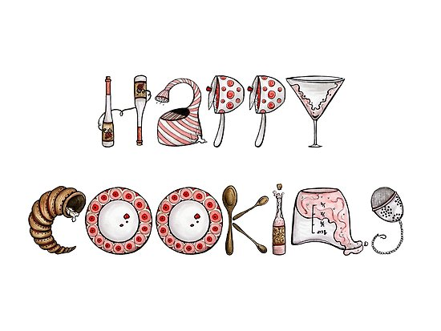

Welcome, Busy Bees!
Are you busy with work? School? Both? Fear not! On this website there are recipes for breakfast, lunch, and dinner that are under 10 ingredients. This makes the recipes quick and relatively cheap. I don't know about you, but when I look up recipes they list so many ingredients that it would cost a lot of money to make it! Plus, when you're busy, most of the time you don't want to spend a lot of time cooking. Some of these recipes may take a little while to cook, but they make a lot and you can freeze the leftovers so it's less work when you're busy. To the left I have provided a link to the Pioneer Woman's 16-minute meals. There are some great recipes there, so please check it out!

Keep checking back!
Eventually I would like this to be a blog, so check back now and again, and you can post your own recipes!I hope you enjoy the recipes and let me know how you like them.